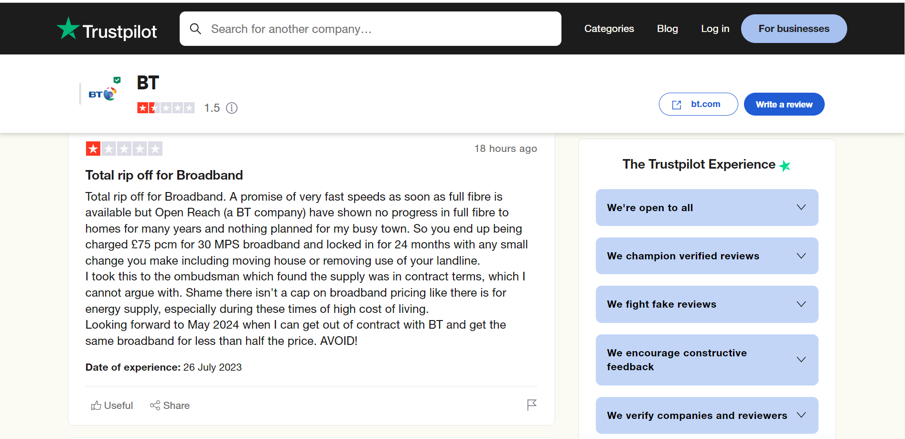
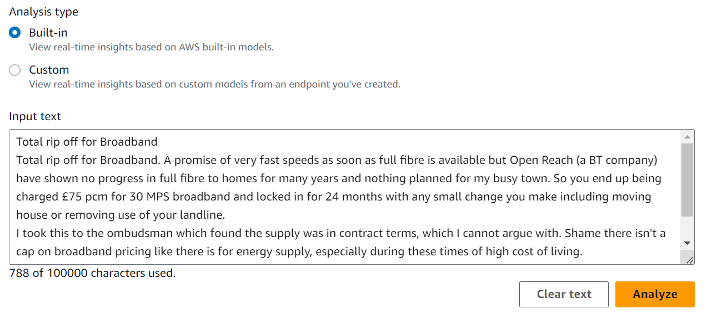
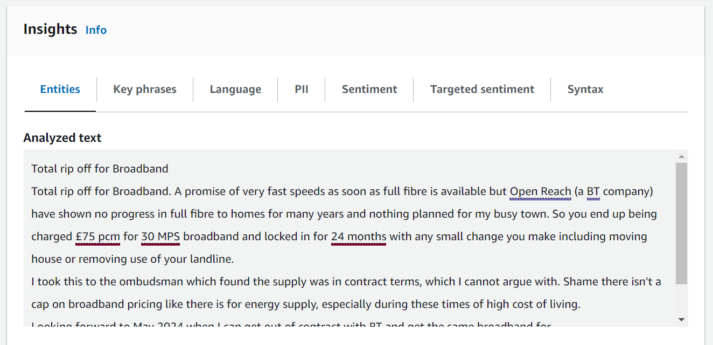
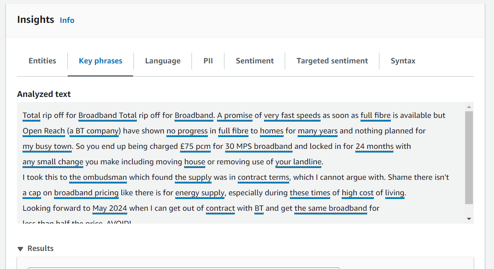
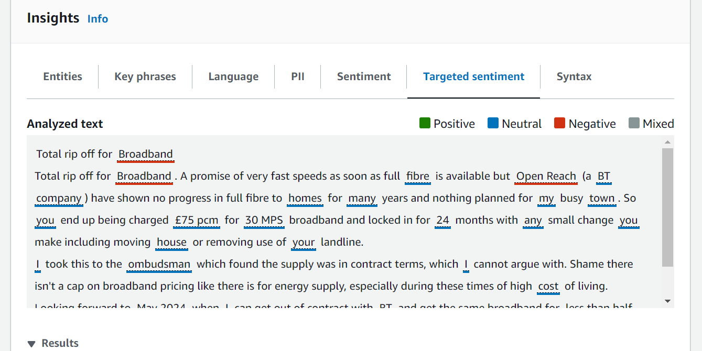
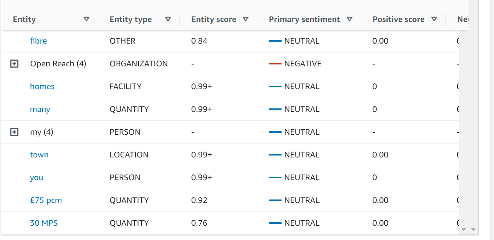
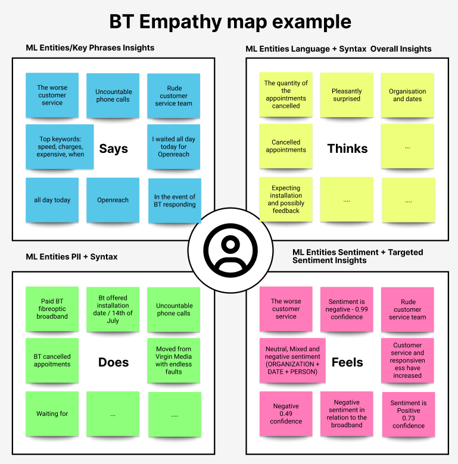

This is a ready-to-print page
Artificial Intelligence
Applied learning in AI for UX research and product thinking
This area of work reflects my ongoing professional and personal development in artificial intelligence, with a focus on applying AI tools in practical ways to support UX research, product thinking, and insight generation.
Rather than treating AI as a trend, I approach it as a set of tools that can strengthen the design process when used thoughtfully. My interest lies in how AI can help surface patterns in language, identify sentiment, speed up analysis, and support more informed decision-making in user-centred design.
The challenge
The challenge is not simply learning new AI tools, but understanding how to use them responsibly and meaningfully within design practice. AI can process large amounts of text and detect patterns quickly, but the real value comes from knowing how to interpret those outputs, connect them to human behaviour, and turn them into useful design insights.
In UX work, research often produces large volumes of qualitative data, from reviews and survey comments to interview notes and support feedback. Analysing this manually can be time-consuming. The opportunity with AI is to accelerate parts of that process while still applying human judgement, context, and storytelling to make the findings useful.
My role
My role in this space is one of active exploration, skill building, and applied experimentation. I use AI tools strategically to support project outcomes, especially in areas such as sentiment analysis, research synthesis, empathy mapping, and early product thinking.
For example, in my UX practice I use tools such as AWS Amazon Comprehend when appropriate to analyse text in real time, extract key phrases, detect dominant languages, identify entities, and uncover sentiment patterns. I then use those findings to support empathy maps, journey mapping, and stakeholder communication.

Picking up an online review.

Analysing an online review by selecting the type of analysis.
Process and approach
My approach combines machine-assisted analysis with human judgement. I start with real text-based inputs, such as online reviews or user feedback, and use AI tools to surface patterns that may otherwise take longer to identify manually.
Typical insight areas include:
- Extracting key phrases
- Identifying entities such as products, brands, or themes
- Analysing overall sentiment
- Reviewing targeted sentiment linked to specific terms
- Using these outputs to inform empathy maps and user journeys
Amazon Comprehend, for example, uses natural language processing and machine learning to uncover insights within UTF-8 encoded text documents. It can return sentiment categories such as positive, negative, mixed, and neutral, along with supporting scores that help reveal how users feel about specific experiences or topics.

Picking up on entity insights: specific people, places, brands, products, or concepts mentioned in a text.

Picking up on key phrases.

Looking at targeted sentiment.

Getting the final sentiment analysis report.
I then translate those findings into UX artefacts and narratives that stakeholders can use. This includes empathy maps, user journeys, insight summaries, and visual storytelling that help teams understand what users are experiencing and where opportunities for improvement exist.

My contribution
My contribution lies in bridging AI capability with design thinking. I use AI to accelerate parts of the research and synthesis process, but always with a human layer of interpretation, filtering, and judgment. That balance is important: AI can surface patterns quickly, but it still takes design thinking to decide what matters, what is noise, and how the insight should shape the product experience.
This practice helps me work faster and more strategically when dealing with qualitative data, while also improving how I communicate insights to stakeholders. It strengthens my ability to move from raw text to structured understanding, and from structured understanding to meaningful UX decisions.
I am also continuing to build in this area through experimentation and prototyping. One example is a chatbot built with Mistral, which you can view here.
Alongside this, I continue learning and practising across AI, machine learning, data, and data visualisation, with a particular interest in:
- AI product design and UX research for AI models
- Conversational UX and voice AI
- Explainable AI and ethical UX
- Data visualisation and AI interaction design
- Human-AI collaboration and automation